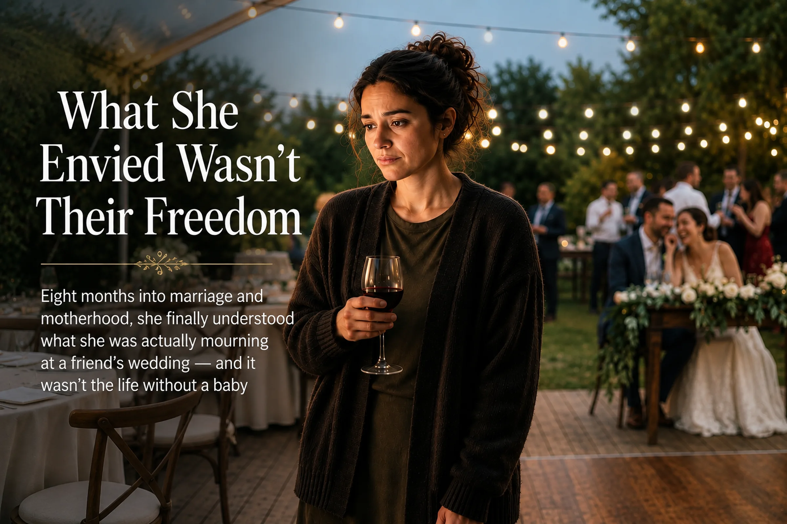
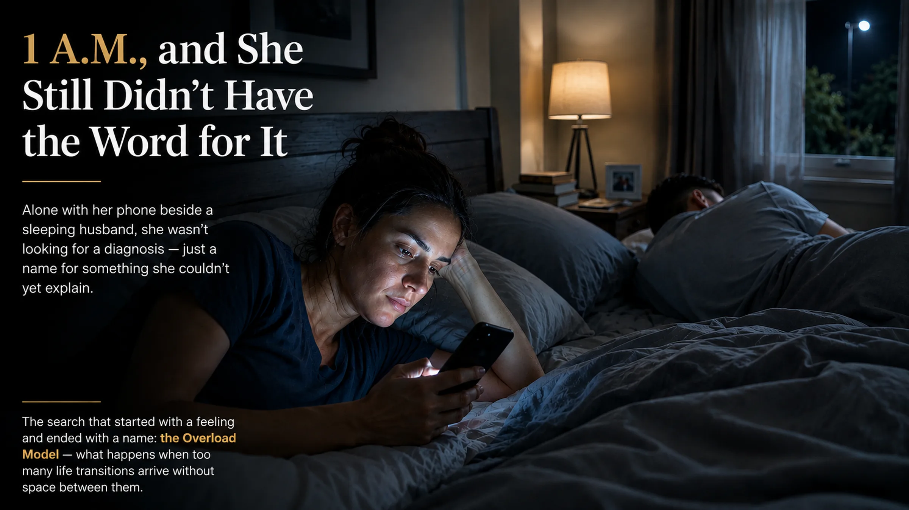
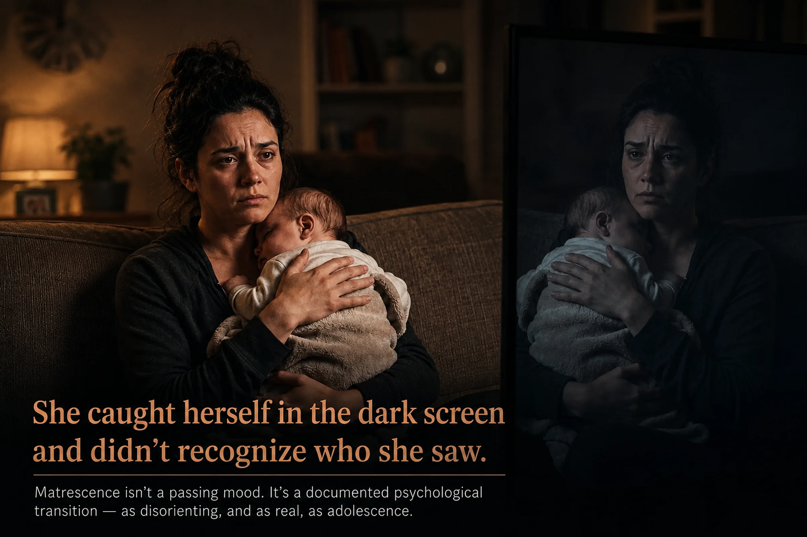
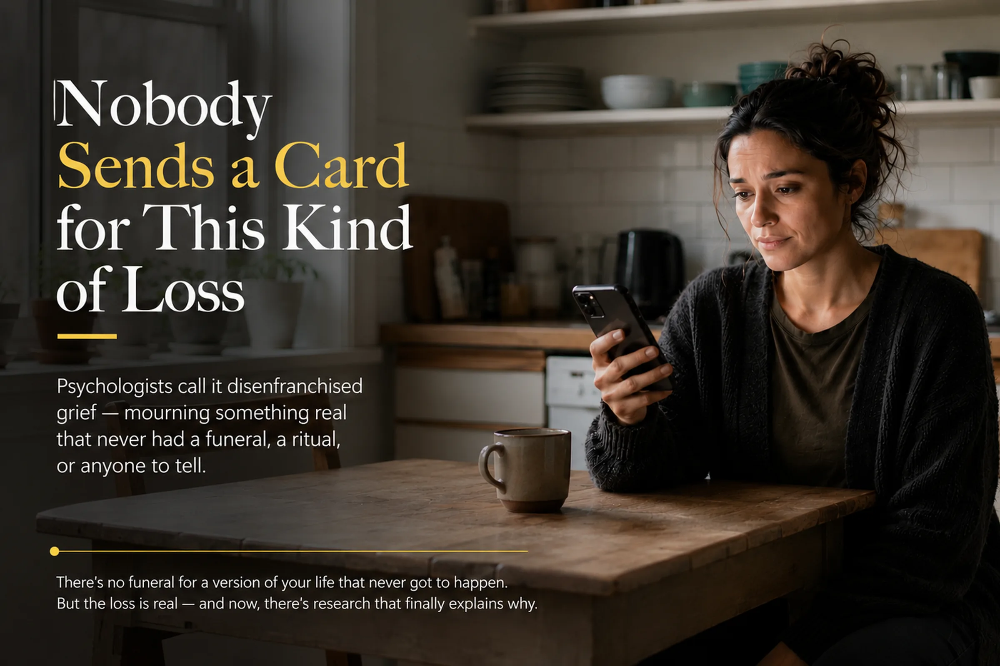
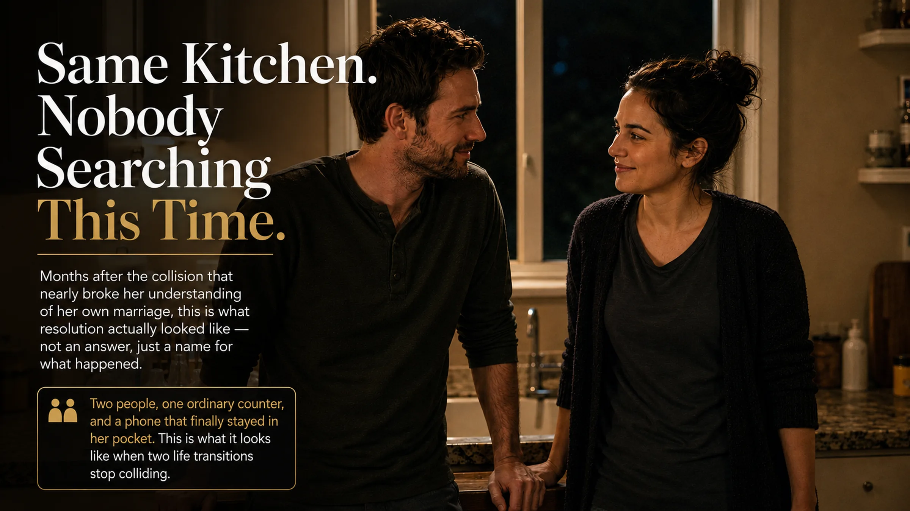

They became parents so quickly they never really got to be newlyweds.
Attaullah
|August 25, 2026|📖 ~14 min read
📖 This is a research-driven narrative essay, not a reported feature. Evelyn and Daniel are illustrative characters created to explore findings from research on colliding life transitions, matrescence, mental load, and relationship change after parenthood. The scenes are fictional; the research discussed throughout is real and cited below.
Evelyn is standing at the kitchen counter at 11:40 p.m., holding her phone up next to her face, the way you hold a passport photo up to a mirror to see if it still looks like you.
On the screen: her wedding day. Mid-laugh, veil caught sideways in the wind, her hand flat against Daniel's chest like she was checking whether his heart was really going that fast too.
She isn't really looking at the photo. She's looking past it, at her own reflection in the dark window over the sink, holding the two images side by side in her mind the way you'd hold up paint swatches, trying to tell whether they're actually different colors or whether the light in the room is playing a trick on you.
"You okay?"
Daniel's in the doorway, a bottle in one hand, sterilizer steam still clinging to his shirt.
"Yeah." She lowers the phone. "Just tired."
He doesn't move. Eight months of this marriage have taught him that just tired has a particular flatness to it when it isn't true.
"You've been standing there a while."
"I know."
He waits one more second, decides not to push, and goes back to the sink. She hears the water start again, the small domestic percussion of a bottle being rinsed. She puts the phone face-down on the counter without finishing whatever it was she was trying to work out, and neither of them says anything else about it.
But she doesn't put the photo out of her mind. It follows her up the stairs. It's still there when she's lying in the dark twenty minutes later, staring at the ceiling, trying to name a feeling that doesn't have a shape yet — just a temperature, low and persistent, like a room that's slightly colder than it should be and you can't find the draft.
···
The following Friday, they try to have what Daniel calls, with a hint of self-conscious optimism, "an actual date night." The baby's asleep. The good wine is open. There's a candle, because Evelyn found one in a drawer and lit it mostly as a small act of defiance against the last eight months.
For nine minutes, it almost works.
Then Daniel says, "Did you see she rolled onto her side today? I swear she almost—" and catches himself. "Sorry. We said no baby talk."
"It's fine."
"No, we said. I'm not doing it." He takes a breath, visibly resetting. "Okay. Tell me something that isn't about her."
Evelyn opens her mouth. Closes it. Tries to locate a single thought in her own head that isn't, in some way, tethered to the small sleeping person down the hall — a book she's reading, a friend she's annoyed at, an opinion about anything at all that existed before March.
"I don't know," she says finally, and there's an edge in it that surprises both of them. "I don't know what else there is right now."
"That's not true."
"Isn't it?"
The candle gutters. Daniel picks his fork back up like he's decided the safest move is to eat. A few minutes later, the argument that follows is, on its surface, about the dishes — whose turn it was, whether the pan had been soaking long enough to justify not scrubbing it tonight — but neither of them is really fighting about the pan, and both of them know it, and neither says so, which somehow makes it worse.
Lying in bed afterward, not touching, Evelyn runs the evening back and lands on a thought she doesn't like: maybe we did this too fast. Not the baby — she steers wide of that thought whenever it drifts close. The wedding. The whole arc of it. Maybe she and Daniel were still learning each other's weather patterns when they signed up to weather something so much bigger, and maybe tonight was just the bill for that arriving early.
It's a clean, containable theory. A relationship problem has a shape you can work on. She falls asleep still holding onto it, mostly because the alternative — that nothing is actually wrong between them, and the feeling is something else entirely — is somehow harder to sit with.
···
Three weeks later, they drive two hours for the wedding of Evelyn's college roommate, Priya, who has been with her fiancé for six years and talks about the wedding the way people talk about something they've had plenty of time to get right.
Evelyn cries during the vows, which she expects. What she doesn't expect is what happens at the reception, when a couple at her table — married four months, no children, still visibly delighted with each other, the kind of couple that laughs at each other's jokes like they're new every time — asks the standard question.
"How long have you guys been married?"
"Eight months," Daniel says.
"Oh, us too! Almost exactly." The husband grins at his wife like they've discovered a coincidence worth celebrating. "What's that been like?"
"Good," Evelyn says. "Really good."
And it isn't a lie, exactly. But she feels something small and unflattering move through her as the other couple keeps talking — about a trip they just booked, about redecorating their apartment slowly and pointlessly and joyfully, about how they still haven't gotten sick of each other, can you believe it, eight months in — and it takes her the better part of an hour to identify the feeling correctly.
It isn't envy of their freedom. She checks for that, specifically, because it would be the easy, expected answer, and she doesn't find it there. She loves her daughter in the frank, bottomless way that surprised her by how uncomplicated it turned out to be.

What she envies, she eventually decides, watching them lean into each other over a shared dessert, is something closer to time. Not free time. Something more specific — the sensation of getting to just be a married person for a while, with no other identity stacked on top of it yet, no second enormous thing arriving before the first one had finished introducing itself.
She doesn't say any of this to Daniel on the drive home. She isn't sure yet how to.
···
It's a Tuesday, nothing special about it, when she finally says it out loud.
They're in the kitchen — always the kitchen, she'll think later, as if the room itself keeps summoning the conversation — and Daniel is washing a bottle, and Evelyn is standing there not really doing anything, which is its own kind of tell.
"I think we skipped something," she says.
He looks up, hands still in the sink. "Skipped what?"
She doesn't answer right away. The dishwasher hums. Somewhere down the hall, the monitor gives off a small burst of static, then goes quiet again.
"I don't know exactly," she says. "That's the problem. I don't have the word for it. I just know there's a version of us — married-us, just-married-us — that we never actually got to have. We went from engaged to parents and I can't find the part in between where we were only just married. Where that was the whole thing we were doing."
"We're still married," Daniel says, carefully, the way you say something true that you suspect isn't going to land as comfort.
"I know that. I'm not saying the marriage is bad. I'm saying I think we skipped a chapter, and nobody tells you that's a thing you can do. Skip it. I keep trying to figure out if it's the wedding I miss, or the baby I resent, or—" She stops herself before that last word finishes leaving her mouth, because she doesn't believe it — not in any way she'd stand behind — but she's frightened that some small percentage of her does, and she has no idea what to do with that.
Daniel turns the water off. Dries his hands slowly, taking his time with it.
"I don't think you resent her," he says.
"I don't. I really don't." Evelyn presses the heels of her hands against her eyes. "That's what scares me. If it were that, at least I'd know what I was dealing with."
Neither of them says anything for a moment. The kitchen is very quiet, the specific quiet of a house with a sleeping baby in it, where silence isn't peace so much as a held breath.
"Then what is it?" Daniel asks. "If it's not the wedding, and it's not her — what's left?"
Evelyn doesn't have an answer. But for the first time in eight months, the question feels like it's pointing somewhere real, instead of circling the same three guesses she's been rotating through alone at midnight.
"I don't know," she says. "But I don't think it's either one of those things by itself. I think it's something about both of them happening at once. I just don't know what that's called yet."
It's the closest thing to a plan either of them has had in months: not an answer, but a direction to start looking.
···
For three days, Evelyn doesn't tell anyone what she found. She turns it over privately, the way you turn over a stone you're not sure is actually worth keeping, and somewhere in the turning, a more skeptical voice starts arguing back — not Daniel's, her own.
Every new parent feels like this. She knows that. She's not naive about it. She's read the articles, the ones every friend with a baby eventually sends around — the ones about the fourth trimester, the sleep math, the way exhaustion alone can make a person feel like a stranger in their own life. She sat up with her sister after her nephew was born and heard almost this exact sentence, minus the wedding, minus the marriage part. I don't feel like myself. Every mother she knows has said some version of it.
So maybe that's all this is. Maybe she found a fancier name for something ordinary and mistook the label for a discovery.
She's washing bottles herself, three nights later, turning the theory over one more time, when she catches herself almost talking herself out of the whole thing — and stops, because something about that impulse feels too convenient. It would be easier, wouldn't it, to file this under exhaustion and move on. Exhaustion has a known shape. It ends. You sleep more, eventually, and it lifts.
But exhaustion doesn't explain the wedding photo. It doesn't explain why, of all the things she could be grieving at midnight, she keeps landing on the marriage specifically — not the baby, not her body, not her old job, not her sleep. Every new parent is tired. Not every new parent stands in a kitchen holding up a photo like evidence in a case she hasn't figured out how to argue yet.
That night she says some version of this to Daniel, half-braced for him to agree with the easier theory, because it would let both of them off the hook faster.
He doesn't.
"I mean, yeah, we're exhausted," he says, not looking up from the pan he's drying. "Everyone with a kid this age is exhausted. That's not — I don't think that's news." He sets the pan down. "But I don't think that's what you've been standing in the kitchen about at midnight for two weeks."
"You noticed that."
"I notice everything you do at midnight. I'm awake for most of them too." He says it without any edge, just fact. "I think you're tired and something else. I don't think it has to be one or the other."
It's such a small thing to say. But it's the first time anyone — including her — has let both be true at once without picking a side.
She types the search a few nights before this conversation, actually — late, alone, phone glow the only light in the bedroom. Not anything as clean as why do I feel disconnected from my marriage. What she types, after three worse attempts, is closer to: why does it feel like I never got to be just married.
The thing that comes back isn't a parenting article. It's a paper about people who move cities, change jobs, and end a relationship all in the same year — nothing about marriage, nothing about babies. She skims past the names she doesn't recognize, past a chart she doesn't understand, and is about to close the tab when one line stops her thumb mid-scroll: when transitions stack, the strain isn't additive. It multiplies.
She reads the sentence twice. Something in her chest loosens slightly — and immediately, she distrusts the feeling, because it arrived too fast, too neatly, like a coat that fits a little too well to be the one she actually lost.
"What are you reading?" Daniel asks, from his side of the bed, not really awake.
"Nothing. Something." She turns the phone toward him, more out of impulse than plan. "Have you ever heard of this? The Overload Model?"
He squints at it for two seconds before his eyes give up on focusing. "No. Sounds like a car problem."
"I think it might be us."
"Mm." He's already drifting. Then, half into the pillow, almost an afterthought: "We never even took a honeymoon, you know. We kept saying after. After the wedding, after we're settled, after —" He doesn't finish it. He's asleep before she can decide if he meant it as a joke.
Evelyn lies there with the phone dimming in her hand. After had quietly eaten itself. There had been no after. The wedding had ended and the next thing had simply already started, with no seam between them where an after could have lived.
It isn't relief exactly, what she feels. It's closer to the specific, cautious interest of finding the first real clue in something you'd started to suspect had no explanation at all — the sense that there might be a shape to this, even if she can't see the whole of it yet.
Maybe, she thinks, and makes herself hold the word carefully, the way you hold something you're not ready to trust with your full weight. Maybe that's part of it.
What is the Overload Model?
The Overload Model is real research — developed by psychologists Jennifer Schulenberg and Jennifer Maggs in 2002, and confirmed in later work by Joëlle Lanctôt and François Poulin in 2024. It describes what happens when several major life transitions stack up at once: the strain isn't additive, it compounds. The original research studied this in early adulthood — leaving school, starting a career, new relationships, moving out — not marriage and new parenthood specifically. Applying it to Evelyn and Daniel's situation is this piece's own extension of the idea, not a direct finding from the studies themselves. The underlying mechanism, though, holds up: transitions compress, and the mind doesn't file them one at a time just because they arrived that way.

She doesn't fall asleep for a long time. Not because she's upset. Because she's thinking.
···
It's an ordinary Sunday morning, the baby heavy and warm against her shoulder, milk-drunk and half-asleep, when Evelyn catches her reflection in the black screen of the turned-off television and doesn't recognize the woman holding the baby for one full second before the recognition catches up to her.

It isn't dramatic. It isn't a breakdown. It's a flicker, gone almost as fast as it arrives — but it's the second time this month it's happened, and this time she doesn't let herself dismiss it.
She goes looking again, later, phone propped against the coffee maker while the kettle heats, and this time the search takes her somewhere further back than the Overload Model. A word she's never encountered: matrescence. Coined decades ago by an anthropologist, mostly forgotten, then picked back up by a psychologist who described it as something closer to adolescence than to a life event — not a single hard transition but a slow, disorienting reconstruction of the self, done in public, usually without anyone telling you it's supposed to feel like this.
She reads the word four times. Says it once, quietly, to the kitchen.
What is matrescence?
Matrescence is the developmental process of becoming a mother — identity, body, and social role shifting at once. Anthropologist Dana Raphael coined the term in 1973, in her book The Tender Gift. It sat mostly unused for decades until psychologist Dr. Aurélie Athan, at Columbia, revived it and drew the comparison Evelyn later draws for herself: that becoming a mother can be as disorienting, and as legitimate a developmental passage, as adolescence. Unlike the Overload Model, this article's use of the term stays close to its original scope — it's describing exactly what Raphael and Athan meant by it, not stretching it into new territory.
It doesn't explain the marriage. She's careful about that, even in the privacy of her own thinking — she doesn't let this new word swallow the whole question the way the honeymoon line almost had, doesn't let herself declare this is it twice in one investigation. But it does explain something that's been sitting unnamed since the television screen: that becoming a mother was never going to be a small adjustment folded quietly into an existing life. It was always going to be its own enormous thing. She just hadn't expected to be doing it at the exact same time as another enormous thing.
That evening, watching Daniel read to the baby in a low, patient voice that still surprises her with its gentleness, she almost says something. I found a word for part of it. The sentence gets as far as her mouth and stops there. Not because she doesn't trust him with it. Because she isn't sure yet if it's the whole answer or just one half of a question she still doesn't fully know how to ask.
If becoming a mother is this large on its own — she thinks, watching him turn a page — then what was it costing her, exactly, to become one before she'd finished becoming a wife?
···
The dishes fight happens again, almost exactly a repeat of the one from the failed date night, except this time Evelyn doesn't storm off afterward. She stands at the sink, hands in cooling water, and makes herself actually look at the shape of it instead of just feeling it.
It's never really about the dishes. She's known that for weeks. What she hasn't done is ask why the same non-argument keeps recurring, script identical, only the specific dirty pan changing.
She finds the answer partly in research and partly by simply counting — actually counting, one exhausting evening, who does what, how many times a week, who remembers the pediatrician's number and who has to ask for it. It isn't close. It was never close, she realizes, and the imbalance had nothing to do with either of them being lazy or unloving. Researchers who study this call it the mental load — the invisible, unpaid management of a household that tends to fall on mothers even in marriages built, sincerely, on equal intentions. Wanting fairness, it turns out, isn't the same as achieving it once a baby arrives and the division of labor reorganizes itself along older, quieter lines nobody consciously chose.
She doesn't bring this to Daniel as an accusation. She brings it to him as a discovery, the way you'd show someone a receipt that finally explains a bill they'd both been confused by.
He's quiet for a while after she talks him through it. Longer than she expects.
"I think I've been assuming that because I want to do half," he says slowly, "that means I am doing half. I don't think I ever actually checked."
"Neither did I, until this week."
"I don't think I've felt like myself either, if that helps." He says it almost sheepishly, like he's been sitting on it. "I keep thinking that's not allowed — that I don't get to say that, because you're the one who—" He doesn't finish the sentence, but she understands it. Because you're the one whose body did this. Because you're the one everyone asks about.
"I don't think there's a rule like that," she says.
It's a small moment. Neither of them solves anything in it. But for the first time, the fights stop feeling like evidence against the marriage and start feeling like symptoms of something both of them are inside of, together, rather than something one of them is doing to the other.
Which leaves Evelyn with a harder question than the one she started with: if it isn't the wedding, and it isn't the baby, and it isn't either of them failing the other — what happens when you finally stop suspecting the marriage, and start suspecting the shape of the year itself?
···
She doesn't go looking for this one. It finds her, in a comment under someone else's essay about a different kind of loss entirely — a term she's never seen before: disenfranchised grief. Grief without a funeral. Grief nobody hands you a casserole for, because there's no accepted story of what was lost.
She reads the definition twice and feels something settle, quietly, into place — not the whole answer, just the missing piece of why nobody had ever asked her how she was doing about this, specifically. There'd been no ritual for what she'd lost, because what she'd lost had never officially existed. You can't grieve a year of marriage you never had the way you grieve a person. Nobody sends a card.
Can you grieve a stage of life that never happened?
There's no single study that measures this exact feeling — grief for a period of a relationship that got skipped rather than lost. But it sits at a real intersection of three separate, well-documented ideas: the compounding strain of stacked transitions (the Overload Model), the scale of identity change in early motherhood (matrescence), and grief that has no ritual because the loss was never publicly acknowledged (disenfranchised grief, a concept Kenneth Doka named in 1989). Put together, they explain why the feeling might exist and why it might be hard to name — without claiming to be a diagnosed phenomenon in its own right. This is this article's own synthesis, not a settled research finding.

She closes the tab before it can talk her into anything bigger than it is. It tells her why the feeling went unnamed. It doesn't tell her what the feeling actually is, and some instinct in her — the same one that kept her from deciding the Overload Model was the whole answer, or matrescence was — tells her she isn't done yet.
···
It's Daniel who finds it, not her — cleaning out an old email folder on a Sunday, looking for a warranty receipt, when he goes quiet in a way that makes her look up.
"I forgot this existed," he says, and turns the laptop around.
It's a hotel confirmation. Four nights, a small town on the coast they'd picked because neither of them had been. Booked for a week in November, back when November had seemed like a reasonable, ordinary amount of time away.
The cancellation email is in the same thread, three messages down. Sent the same week as a different email, one she remembers far better — the one from her doctor's office, subject line blandly clinical, containing the two lines that changed the shape of the following year before either of them had unpacked from the wedding.
She stares at the dates a long moment. Four nights in November. Canceled the same week they found out. She'd forgotten the trip had ever been real enough to book, let alone real enough to lose.
And there it is, finally, not as a phrase from a search result but as a fact sitting right there in a shared inbox: there was never a gap. Not a metaphorical one, not a feeling she'd have to argue herself into believing — an actual, literal, bookable week that had existed on a calendar and then hadn't, replaced by something enormous before it had the chance to happen. The wedding ended on a Sunday. The pregnancy test was two Tuesdays later. The honeymoon that would have marked the space between married and everything after got quietly deleted from a calendar before either of them thought to mourn it, because there was, immediately, something much louder to attend to.
It wasn't the wedding she'd been missing. It wasn't the baby she resented, not really, not ever. It was the four nights in between that never happened — the specific, literal room where she was supposed to get to just be married for a while, standing empty, canceled, forgotten until an old email folder found it for her.
"We really never rebooked it," Daniel says, still looking at the screen.
"No," Evelyn says. "I don't think we ever will. I don't think that's the point anymore."
"Then what is?"
"That we know it happened. That there's a reason I keep looking at that photo. It's not because I'm not happy." She takes the laptop from him, closes it gently. "It's because somewhere in a hotel two hours from here, there's a room we paid for and never used. And I think some part of me has been standing in it this whole time, waiting to be married in it, while the rest of me was already somebody's mother."
He's quiet for a moment, turning something over.
"I used to play in a Sunday basketball thing," he says. "With Marcus and those guys, since college. I kept telling myself I'd go back after the wedding settled down. Then after the first trimester. Then after she was born, once we had a routine." He shrugs, like it's a smaller thing than it apparently still is. "I stopped even saying after a few months ago. I think I just quietly decided that guy doesn't play basketball anymore."
Evelyn looks at him. It hadn't occurred to her that he might have his own version of the hotel room — some ordinary, unglamorous thing he'd also assumed would simply resume once life caught its breath, that had instead just quietly stopped being true.
"You never told me that."
"Wasn't really thinking about it as a thing." He's already looking a little sorry he brought it up. "Until right now, I guess."
···
There's a night she hasn't told Daniel about — 2 a.m., searching two things in a row: postpartum depression symptoms, then, without quite deciding to, signs your marriage won't survive a baby. A therapist's website open in another tab, cursor near the contact form, an email composing itself in her head: I think something's wrong between us.
She never sent it. She thinks about that sometimes — not because she's certain what would have happened, but because she knows what story she'd have told a stranger that night, and it wouldn't have been the true one. She doesn't know if a good therapist would have found their way to the real shape of it anyway. Maybe. She just knows she's glad she didn't have to find out by accident, mid-diagnosis, with a marriage as the thing on the table.
···
Months later, a different night, same kitchen. Evelyn catches herself doing it again — phone up, old photo, comparing her face to the dark window behind it — and this time Daniel doesn't ask what she's doing. He just comes and stands beside her, looks at the photo over her shoulder.
"You still look for her in there," he says. Not a question.
"Sometimes."
"Do you find her?"
She looks a long moment at the laughing woman, veil sideways, hand pressed to his chest like she was counting his heartbeat.
"No," she says. "But I know where she went now. That's different."
She sets the phone face-down on the counter — the same motion as always, but this time it isn't a search.
"I used to think I lost a year," she says. "Being married before we were parents. I don't think that anymore. I think we lost four specific nights in a hotel neither of us has ever seen, and I spent eight months grieving something so much bigger and vaguer than that, because I didn't have the actual, small thing to point to yet."
Daniel picks a bottle up off the drying rack, checks it, sets it back down — the same small domestic motion from the very first night, except neither of them is anxious inside it anymore.
"For what it's worth," he says, "I don't go looking for her in the pictures."
"Why not?"
"Because I already know where she went." He nods toward the hallway, toward the small, steady sound of a child breathing in her sleep. "She's in there. We just took a while to figure out what to call the space where we lost her for a bit."
Evelyn is quiet for a moment.
"Maybe we should go anyway. Someday."
Daniel laughs. "To the hotel?"
"No," she says. "Just somewhere."
"Without bottles."
"Without bottles."

📝 Editor's note
This piece is a research-driven narrative essay, not a reported feature. Evelyn and Daniel are illustrative characters, created to bring together research on colliding life transitions — the Overload Model, matrescence, the social clock, the mental load, and disenfranchised grief among them. The scenes are fictional. The research, and the experience it describes for many parents, is not.
About the author
Attaullah writes about pregnancy, new parenthood, and the parts of family life that don't fit neatly into a due-date calendar — including the quieter, harder-to-name transitions, like what happens when marriage and motherhood arrive close enough together that neither gets its own space to settle.
💬 Leave a Comment
Sign in with GitHub to comment. Your voice matters in this community.
🙌 No account needed — just share your thoughts below.
Thanks — your comment has been submitted and will appear here once reviewed.
Something went wrong submitting your comment. Please try again in a moment.